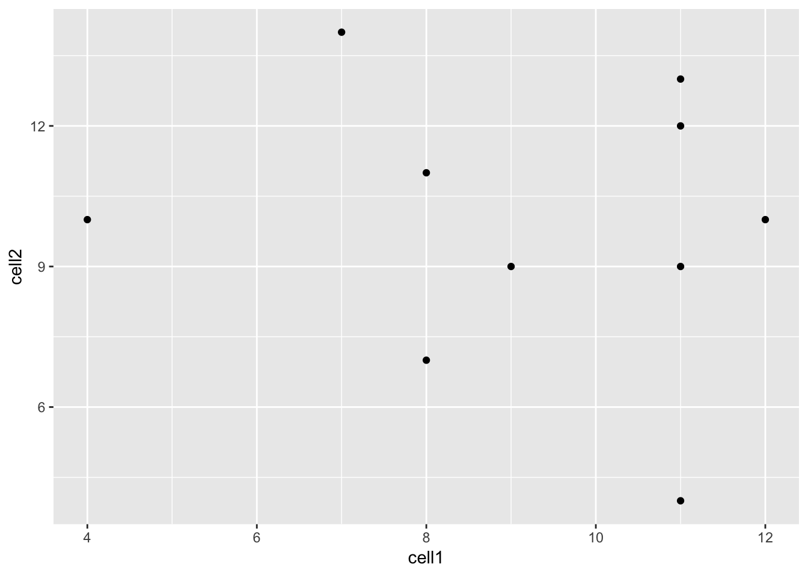
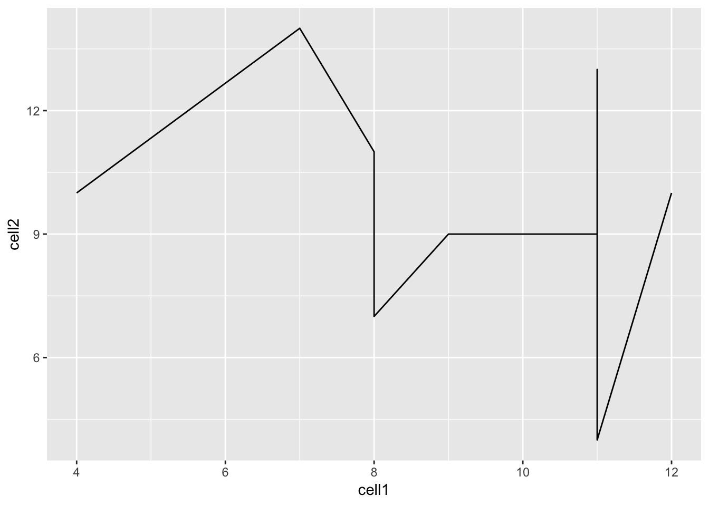

4 Introduction to R/Bioconductor
4.1 Installing R packages
4.1.1 CRAN
The Comprehensive R Archive Network CRAN is the biggest archive of R packages. There are few requirements for uploading packages besides building and installing succesfully, hence documentation and support is often minimal and figuring how to use these packages can be a challenge it itself. CRAN is the default repository R will search to find packages to install:
4.1.2 Github
Github isn’t specific to R, any code of any
type in any state can be uploaded. There is no guarantee a package
uploaded to github will even install, nevermind do what it claims
to do. R packages can be downloaded and installed directly from
github using the devtools package installed above.
install.packages("devtools")
library("devtools")
devtools::install_github("hemberg-lab/scRNA.seq.funcs")
devtools::install_github("theislab/kBET")Github is also a version control system which stores multiple versions of any package. By default the most recent “master” version of the package is installed. If you want an older version or the development branch this can be specified using the “ref” parameter:
4.1.3 Bioconductor
Bioconductor is an open-source, open-development repository of R-packages specifically for high-throughput biological analyses. It has the strictest requirements for submission, including installation on every platform and full documentation with a tutorial (called a vignette) explaining how the package should be used. Bioconductor also encourages utilization of standard data structures/classes and coding style/naming conventions, so that, in theory, packages and analyses can be combined into large pipelines or workflows.
This is the old way of installing packages:
Note: in some situations it is necessary to substitute “http://” for “https://” in the above depending on the security features of your internet connection/network.
However, this is the new (and improved way) of installing Bioconductor packages using BiocManager:
install.packages("BiocManager")
library("BiocManager")
BiocManager::install("scran", "Rtsne", "sva", "DESeq2", "edgeR", "SC3", "zinbwave")You can even install packages from a specific version of Bioconductor:
BiocManager::install("scater", version="devel") # development branch
BiocManager::install("scater", version="3.8") # current release as of Fall 2018Bioconductor also requires creators to support their packages and has a regular 6-month release schedule. Make sure you are using the most recent release of bioconductor before trying to install packages for the course.
4.1.4 Source
The final way to install packages is directly from source. In this case you have to download a fully built source code file, usually packagename.tar.gz, or clone the github repository and rebuild the package yourself. Generally this will only be done if you want to edit a package yourself, or if for some reason the former methods have failed.
4.2 Data Types
4.2.1 What is Tidy Data?
The tidyverse is “an opinionated collection of R packages designed for data science. All packages share an underlying philosophy and common APIs.”
Another way of putting it is that it’s a set of packages that are useful specifically for data manipulation, exploration and visualization with a common philosphy.
4.2.1.1 What is this common philosphy?
The common philosphy is called “tidy” data. It is a standard way of mapping the meaning of a dataset to its structure.
In tidy data:
- Each variable forms a column.
- Each observation forms a row.
- Each type of observational unit forms a table.

Below, we are interested in transformating the table on the right to the the table on the left, which is considered “tidy”.

Working with tidy data is useful because it creates a structured way of organizing data values within a data set. This makes the data analysis process more efficient and simplifies the development of data analysis tools that work together. In this way, you can focus on the problem you are investigating, rather than the uninteresting logistics of data.
4.2.1.2 What is in the tidyverse?
We can install and load the set of R packages using
install.packages("tidyverse") function.
When we load the tidyverse package using library(tidyverse),
there are six core R packages that load:
- readr, for data import.
- tidyr, for data tidying.
- dplyr, for data wrangling.
- ggplot2, for data visualisation.
- purrr, for functional programming.
- tibble, for tibbles, a modern re-imagining of data frames.
Here, we load in the tidyverse.
These packages are highlighted in bold here:

Because these packages all share the “tidy” philosphy, the data analysis workflow is easier as you move from package to package.
If we are going to take advantage of the “tidyverse”, this means we need to transform the data into a form that is “tidy”. If you recall, in tidy data:
- Each variable forms a column.
- Each observation forms a row.
- Each type of observational unit forms a table.
For example, consider the following dataset:

Here:
- each row represents one company (row names are companies)
- each column represent one time point
- the stock prices are defined for each row/column pair
Alternatively, a data set can be structured in the following way:
- each row represents one time point (but no row names)
- the first column defines the time variable and the last three columns contain the stock prices for three companies

In both cases, the data is the same, but the structure is different. This can be frustrating to deal with as an analyst because the meaning of the values (rows and columns) in the two data sets are different. Providing a standardized way of organizing values within a data set would alleviate a major portion of this frustration.
For motivation, a tidy version of the stock data we looked at above looks like this: (we’ll learn how the functions work in just a moment)

In this “tidy” data set, we have three columns representing three variables (time, company name and stock price). Every row represents contains one stock price from a particular time and for a specific company.
The tidyr
is an R package that transforms data sets to a tidy format.
4.2.2 What is Rich Data?
If you google ‘rich data’, you will find lots of different definitions
for this term. In this course, we will use ‘rich data’ to mean data which
is generated by combining information from multiple sources. For example,
you could make rich data by creating an object in R which contains a matrix
of gene expression values across the cells in your scRNA-seq
experiment, but also information about how the experiment was performed.
Objects of the SingleCellExperiment class, which we will discuss below,
are an example of rich data.
4.3 Bioconductor
From Wikipedia: Bioconductor is a free, open source and open development software project for the analysis and comprehension of genomic data generated by wet lab experiments in molecular biology. Bioconductor is based primarily on the statistical R programming language, but does contain contributions in other programming languages. It has two releases each year that follow the semiannual releases of R. At any one time there is a release version, which corresponds to the released version of R, and a development version, which corresponds to the development version of R. Most users will find the release version appropriate for their needs.
We strongly recommend all new comers and even experienced high-throughput data analysts to use well developed and maintained Bioconductor methods and classes.
4.3.1 SingleCellExperiment class
SingleCellExperiment
(SCE) is a S4 class for storing data from single-cell experiments. This includes
specialized methods to store and retrieve spike-in information, dimensionality
reduction coordinates and size factors for each cell, along with the usual
metadata for genes and libraries.

In practice, an object of this class can be created using the
SingleCellExperiment() constructor:
library(SingleCellExperiment)
counts <- matrix(rpois(100, lambda = 10), ncol=10, nrow=10)
rownames(counts) <- paste("gene", 1:10, sep = "")
colnames(counts) <- paste("cell", 1:10, sep = "")
sce <- SingleCellExperiment(
assays = list(counts = counts),
rowData = data.frame(gene_names = paste("gene_name", 1:10, sep = "")),
colData = data.frame(cell_names = paste("cell_name", 1:10, sep = ""))
)
sce## class: SingleCellExperiment
## dim: 10 10
## metadata(0):
## assays(1): counts
## rownames(10): gene1 gene2 ... gene9 gene10
## rowData names(1): gene_names
## colnames(10): cell1 cell2 ... cell9 cell10
## colData names(1): cell_names
## reducedDimNames(0):
## spikeNames(0):In the SingleCellExperiment object, users can assign arbitrary names to
entries of assays. To assist interoperability between packages, some
suggestions for what the names should be for particular types of data
are provided by the authors:
- counts: Raw count data, e.g., number of reads or transcripts for a particular gene.
- normcounts: Normalized values on the same scale as the original counts. For example, counts divided by cell-specific size factors that are centred at unity.
- logcounts: Log-transformed counts or count-like values. In most cases, this will be defined as log-transformed normcounts, e.g., using log base 2 and a pseudo-count of 1.
- cpm: Counts-per-million. This is the read count for each gene in each cell, divided by the library size of each cell in millions.
- tpm: Transcripts-per-million. This is the number of transcripts for each gene in each cell, divided by the total number of transcripts in that cell (in millions).
Each of these suggested names has an appropriate getter/setter method
for convenient manipulation of the SingleCellExperiment. For example,
we can take the (very specifically named) counts slot, normalize it and
assign it to normcounts instead:
## class: SingleCellExperiment
## dim: 10 10
## metadata(0):
## assays(2): counts normcounts
## rownames(10): gene1 gene2 ... gene9 gene10
## rowData names(1): gene_names
## colnames(10): cell1 cell2 ... cell9 cell10
## colData names(1): cell_names
## reducedDimNames(0):
## spikeNames(0):## [1] 10 10## cell1 cell2 cell3 cell4 cell5 cell6 cell7
## gene1 3.169925 3.321928 3.321928 3.321928 4.000000 3.169925 3.321928
## gene2 3.169925 3.169925 3.169925 3.321928 4.000000 3.459432 3.459432
## gene3 3.807355 3.169925 3.906891 4.247928 3.000000 3.000000 3.459432
## gene4 3.584963 3.321928 3.906891 3.807355 3.169925 3.321928 3.807355
## gene5 3.906891 3.459432 3.321928 3.169925 4.169925 3.169925 3.584963
## gene6 4.169925 3.000000 3.000000 3.169925 4.169925 3.169925 3.700440
## cell8 cell9 cell10
## gene1 3.700440 3.700440 3.321928
## gene2 3.906891 3.700440 3.906891
## gene3 3.584963 3.459432 3.000000
## gene4 4.087463 3.000000 3.169925
## gene5 4.087463 3.584963 3.321928
## gene6 3.169925 2.584963 3.7004404.3.2 scater package
scater is a R package for single-cell RNA-seq analysis (McCarthy et al. 2017). The package contains several useful methods for quality control, visualisation and pre-processing of data prior to further downstream analysis.
scater features the following functionality:
- Automated computation of QC metrics
- Transcript quantification from read data with pseudo-alignment
- Data format standardisation
- Rich visualizations for exploratory analysis
- Seamless integration into the Bioconductor universe
- Simple normalisation methods
We highly recommend to use scater for all single-cell RNA-seq analyses and
scater is the basis of the first part of the course.
As illustrated in the figure below, scater will help you with quality control,
filtering and normalization of your expression matrix following mapping
and alignment. Keep in mind that this figure
represents the original version of scater where an SCESet class was used.
In the newest version this figure is still correct, except that SCESet
can be substituted with the SingleCellExperiment class.

4.4 Data visualization using ggplot2
4.4.1 What is ggplot2?
ggplot2 is an R package designed by Hadley Wickham which facilitates
data visualizations. In this section, we will touch briefly on some of the
features of the package. If you would like to learn more about how to use
ggplot2, we would recommend reading “ggplot2 Elegant graphics for data analysis”,
by Hadley Wickham.
4.4.2 Principles of ggplot2
- Your data must be a
data.frameif you want to plot it usingggplot2. - Use the
aesmapping function to specify how variables in thedata.framemap to features on your plot - Use
geomsto specify how your data should be represented on your graph eg. as a scatterplot, a barplot, a boxplot etc.
4.4.3 Using the aes() mapping function
The aes function specifies how variables in your dataframe map to
features on your plot. To understand how this works, let’s look at an example:
library(tidyverse) # this loads the ggplot2 R package
set.seed(12345)
counts <- as.data.frame(matrix(rpois(100, lambda = 10), ncol=10, nrow=10))
gene_ids <- paste("gene", 1:10, sep = "")
colnames(counts) <- paste("cell", 1:10, sep = "")
counts <- data.frame(gene_ids, counts)
counts## gene_ids cell1 cell2 cell3 cell4 cell5 cell6 cell7 cell8 cell9 cell10
## 1 gene1 11 9 15 11 12 16 9 7 13 14
## 2 gene2 12 10 8 8 9 12 8 15 8 8
## 3 gene3 9 9 11 4 10 7 10 12 2 11
## 4 gene4 8 11 11 11 10 4 8 9 7 6
## 5 gene5 11 13 9 6 14 11 12 11 13 10
## 6 gene6 4 10 12 18 13 13 9 12 10 11
## 7 gene7 11 12 16 10 7 7 10 6 12 9
## 8 gene8 7 14 16 5 12 10 10 7 5 10
## 9 gene9 8 7 15 5 12 7 12 8 8 10
## 10 gene10 11 4 10 10 16 15 9 6 9 11
Let’s take a closer look at the final command,
ggplot(data = counts, mapping = aes(x = cell1, y = cell2)). ggplot()
initializes a ggplot object and takes the arguments data and mapping.
We pass our dataframe of counts to data and use the aes() function
to specify that we would like to use the variable cell1 as our x
variable and the variable cell2 as our y variable.
Clearly, the plot we have just created is not very informative because
no data is displayed on them. To display data, we will need to use geoms.
4.4.4 Geoms
We can use geoms to specify how we would like data to be displayed on our graphs.
For example, our choice of geom could specify that we would like our data to
be displayed as a scatterplot, a barplot or a boxplot.
Let’s see how our graph would look as a scatterplot.

Now we can see that there doesn’t seem to be any correlation between
gene expression in cell1 and cell2. Given we generated counts randomly,
this isn’t too surprising.
We can modify the command above to create a line plot using the geom_line()
function.

Hint: execute ?ggplot and scroll down the help page. At the bottom is a
link to the ggplot2 package index. Scroll through the index until you
find the geom options.
4.4.5 Plotting data from more than 2 cells
So far we’ve been considering the gene counts from 2 of the cells in our dataframe. But there are actually 10 cells in our dataframe and it would be nice to compare all of them. What if we wanted to plot data from all 10 cells at the same time?
At the moment we can’t do this because we are treating each individual cell as a variable and assigning that variable to either the x or the y axis. We could create a 10 dimensional graph to plot data from all 10 cells on, but this is a) not possible to do with ggplot and b) not very easy to interpret. What we could do instead is to tidy our data so that we had one variable representing cell ID and another variable representing gene counts, and plot those against each other.
In code, this would look like:
## gene_ids Cell_ID Counts
## 1 gene1 cell1 11
## 2 gene2 cell1 12
## 3 gene3 cell1 9
## 4 gene4 cell1 8
## 5 gene5 cell1 11
## 6 gene6 cell1 4Essentially, the problem before was that our data was not tidy because
one variable (Cell_ID) was spread over multiple columns. Now that we’ve
fixed this problem, it is much easier for us to plot data from all
10 cells on one graph.

References
McCarthy, Davis J., Kieran R. Campbell, Aaron T. L. Lun, and Quin F. Wills. 2017. “Scater: Pre-processing, Quality Control, Normalization and Visualization of Single-Cell RNA-Seq Data in R.” Bioinformatics, January, btw777. https://doi.org/10.1093/bioinformatics/btw777.